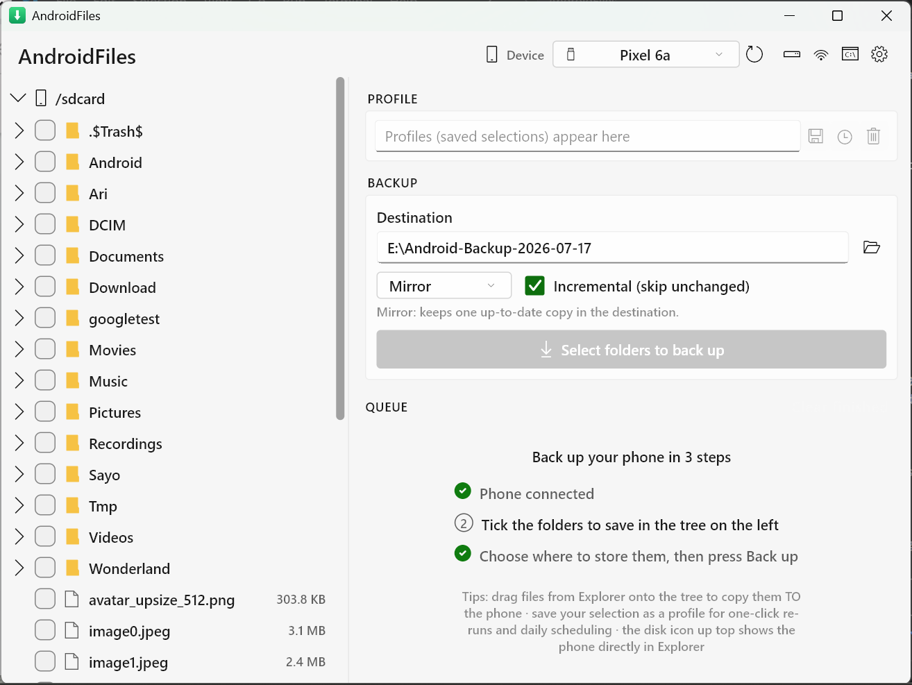

Back up your Android phone to Windows over ADB — several times faster than MTP, incremental, and verified.
Free & open source (MIT) · Windows 10/11 x64 · installer that keeps itself up to date, or a portable ZIP

Folders leave the phone as one continuous tar stream — no per-file round-trips, so big folders transfer at full USB speed where MTP crawls.
Re-runs move only what changed. An untouched 50 GB photo library re-verifies in seconds and transfers 0 bytes.
Keep a dated folder per run — unchanged files are hardlinked, so months of history cost almost no extra disk.
File counts are checked after every run, and a deep-verify mode compares md5 of every file on both sides.
Mount the phone as a real drive letter and browse it in Explorer (via WinFsp) — read-only by default, writable if you opt in.
Pair by scanning a QR code, reconnect automatically, and schedule daily backups that run themselves and toast when done.